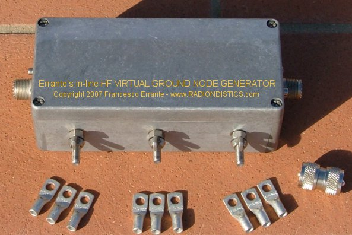

|
Planning a trip to Sicily? �Then,
make sure you won't be feeding the Mafia!
 |
|
|
Se hai un interesse scientifico in materia di fisica della
radio, visiona questo sito internet nell'ordine consigliato!
|
|
|
|
 SISTEMA CAPACITIVO DI
TERRA PER RF
SISTEMA CAPACITIVO DI
TERRA PER RF
Vedi anche: Generatore di nodo di terra
virtuale per linee di trasmissione bilanciate
�
Il
GENERATORE di NODO di TERRA VIRTUALE
in-line
"V.G.N.G.",
per brevit�

Il generatore di nodo di terra virtuale
in-linea.
Freq. di lavoro: da 1 a 30 MHz
Imp. d'ingresso: 50 Ohm
Imp. d'uscita: 50 Ohm
R.O.S di ingresso/uscita: 1:1 entro la banda
Perdita d'inserzione: -0.01 dB
Potenza RF: 3 KW cw
Connettori tipo: SO-239
Peso : 1 Kg ca.
�
Il generatore di nodo
di terra virtuale in-linea: cos'�, come funziona e cosa fa.
Generatore universale di nodo di
terra virtuale in-linea
di Francesco Errante
Il generatore di nodo di terra virtuale in-linea di
Errante e' un circuito radio-elettrico basato sullo stesso principio
di funzionamento e schema del progetto originale dell'antenna monopolare con
terra virtuale
Il lettore che non abbia gi� familiarizzato col meccanismo di
generazione del nodo di terra virtuale e' vivamente pregato di leggere:
l'antenna HF monopolare con terra
virtuale ed anche il circuito soppressore
con terra virtuale prima di procedere nella lettura di questa
pagina.
Il generatore di nodo di terra virtuale in-linea (in-line V.G.N.G. per brevit�)
e' una rete radio-elettrica simmetrica che converte un segnale RF sbilanciato
in due segnali bilanciati identici e li riconverte nuovamente in un segnale
sbilanciato non-invertito. Nel far ci� la rete genera nel suo centro un nodo di
terra virtuale. Una tale rete pu� efficacemente essere descritta come
"Un-Bal-Bal-Un".
In pratica questo dispositivo, come presentato qui, ha il suo ingresso e la sua
uscita entrambi terminati su un valore di impedenza pari a 50 Ohm ed usa
connettori del tipo SO-239 per per adattarsi al pi� consueto standard di
impedenza di linea co-assiale di trasmissione ed e' ottimizzato per operazioni
nello spettro delle HF da 1 a 30 MHz. All'interno della sua banda di lavoro,
questo dispositivo si dimostra "trasparente" tra la fonte RF ed il carico [SWR
= 1:1] ed esibisce una bassissima perdita d'inserzione [-0.01 dB]. Comunque,
esso pu� essere realizzato per qualsivoglia valore d'impedenza d'ingresso e di
uscita, nonch� per qualsivoglia spettro di frequenze.
Il V.G.N.G. in-linea pu� generare un nodo di terra virtuale in un
qualsivoglia punto di una data linea co-assiale in un sistema a linea di
trasmissione sbilanciata. Questa �, infatti, la sua funzione. � anche
disponibile la versione per linee bilanciate.
Applicazioni principali:
1) Pu� essere impiegato per stabilizzare
un intero sistema di RTX su linea sbilanciata, indipendentemente dalla sua
complessit�. Esso fornisce un affidabile e centralizzato sistema di messa a
terra per RF.
Come molti lettori hanno gi� avuto modo di constatare, l'ottenimento di una
buona messa a terra per RF � un'ardua impresa e non ha niente a che fare con
le soluzioni adottabili per la messa a terra convenzionale;
N.B. Per ragioni di sicurezza, ove richiesto, tutti gli
apparecchi elettrici devono essere messi a terra nel modo convenzionale e lo
chassis del VGNG in-linea pu� anch'esso essere collegato al dispersore di
sicurezza. Gli chassis di tutti gli apparati vanno collegati ai terminali di
massa di cui il VGNG in-linea dispone. Tutti i collegamenti da realizzarsi
attraverso il percorso pi� breve.
2) Pu� essere impiegato per fornire un modo affidabile per
corto-circuitare le antenne che non offrono protezioni antistatiche, senza
doverle modificare o doverle raggiungere sul tetto. Grazie al fatto che il
VGNG in-linea esibisce un solido corto circuito alla corrente continua su
entrambi le sue porte RF, tutte le cariche elettrostatiche raccolte
dall'antenna e/o conduttore esterno del cavo coassiale saranno instradate via
percorso di terra comune verso il dispersore di terra di sicurezza
dell'edificio;
3) Pu� essere usato per stabilizzare le
linee co-assiali esposte a radiazione hertziana provenienti da altre fonti
vicine;
4) Pu� essere impiegato per stabilizzare
carichi reattivi nel loro punto di alimentazione.
�
Importanza scientifica:
Il VGNG in-linea permette a laboratori di fisica e RF
di disporre di un affidabile, veloce ed economico sistema di messa a
terra per RF da impiegarsi come preciso riferimento per misure e
collaudi.
|
Vantaggi operativi:
a. Il VGNG in-linea � facile e veloce da
installare;
b. Il VGNG in-linea aiuta a migliorare la compatibilit� E.M.C.
all'interno di ambienti ad alta densit� di apparecchiature
radio-elettriche.
|
�
|
F.A.Q.:
Domanda: Utilizzo un'antenna HF con
terra virtuale, devo ugualmente impiegare un VGNG in-linea ?
RISPOSTA: NO ! Il tuo sistema di antenna con terra
virtuale fornisce di gi� tutta la necessaria messa a terra per la R.F.
Comunque, usando un'antenna differente pu� sorgere la necessit� di dover
utilizzare un VGNG in-linea.
Domanda: In quale punto della mia
linea di trasmissione dovrei inserire il VGNG?
RISPOSTA Laddove il sistema RTX su linea sbilanciata
comprende soltanto il TX/RTX-SWRmeter-coaxial-antenna, il VGNG in-linea
deve essere collegato direttamente al connettore d'antenna del
TX/RTX.
N.B. Se si usa un'adattatore d'impedenza d'antenna, il
VGNG in-linea deve sempre precederlo. Ovvero, v� sempre collegato
direttamente all'ingresso dell'adattatore d'impedenza.
Se si usa un amplificatore lineare di potenza, il VGNG in-linea deve
essere sempre posto all'uscita dell'amplificatore.
Laddove il sistema comprende il TX/RTX, l'amplificatore lineare di
potenza ed anche un adattatore d'impedenza d'antenna, il VGNG in-linea
deve essere posto tra l'amplificatore e l'adattatore d'impedenza
d'antenna.
Se sulla linea � presente un filtro, ad esempio un filtro anti-TVI, il
filtro deve sempre trovarsi tra l'uscita dell'amplificatore lineare di
potenza ed il VGNG in-linea. Inoltre, va' notato come il filtraggio
migliori ed il sistema si giover� di un addizionale attenuazione delle
emissioni fuori banda dovuta alla tipica rejezione dei segnali fuori
banda propria del VGNG in-linea.
N.B. Il VGNG in-linea deve essere inserito nella linea
di trasmissione usando un breve ma comodo tratto di cavo RG-213, o
migliore, debitamente intestato con connettori Amphenol tipo PL-259.
Ovunque sia possibile, preferire l'uso di giunti doppio maschio al posto
di collegamenti con cavo co-assiale.
|

Prezzo:
Euro 160,00 +IVA e spese di spedizione
�
�
�
RADIONDISTICS garantisce a vita i propri
prodotti.
|
|
|
|
|
|
|
�
Tutti i concetti, metodi, disegni e dispositivi presentati in questo sito internet
sono opere originali di FRANCESCO ERRANTE.
Brevetti & Copyright © 1985- di FRANCESCO ERRANTE.
Questo materiale � protetto dalle leggi sul Diritto d'Autore e sulla
propriet� intellettuale.
Riproduzione, anche parziale, consentita solo previo consenso scritto
dell'Autore.
La detenzione e l'uso di questi documenti, ottenuti mediante qualsiasi mezzo sia esso elettronico,
informatico, telematico, fotografico o meccanico � consentito esclusivamente per uso personale.
Tutti i diritti riservati.

|
|
�
All rights reserved. Copyright © 1985- Francesco Errante
www.Radiondistics.com - Tel.(+39) 339.180.1313
|
|